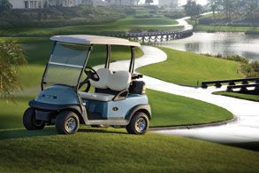
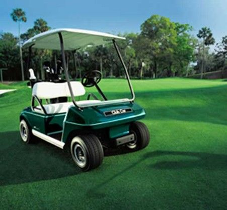
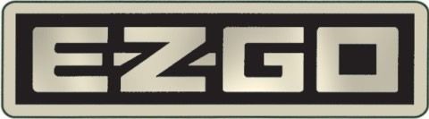

New Golf Carts
New Tomberlin carts with safety built in, plus Club Car, E-Z-GO and Yamaha.
New Tomberlin carts
Full showroom →As an authorized Tomberlin dealer, we sell new Tomberlin carts with safety built in as standard: 3-point seatbelts, 4-wheel hydraulic brakes, locking storage and a unique personal key. Every new cart comes with a bumper-to-bumper warranty.

Club Car, E-Z-GO & Yamaha
We also sell, customize and service the major golf car brands. Call to ask what we have on hand.

Club Car Precedent
The stylish Precedent with Club Car's Excel™ electric drive system, in 2- and 4-passenger versions, plus the feature-packed Signature Edition.

Club Car DS
The legendary DS set the stage for technological innovation and remains tried and true today.

E-Z-GO TXT & RXV
Built to high standards for design, performance and durability. The TXT is a proven 2-seat electric; the RXV and Freedom RXV come in electric and gas with 800 lb load capacity.
Off the course, on rough terrain or around the ranch, any of these carts can be transformed with lift kits, windshields and brush guards, mirrors, covers, enclosures and more.